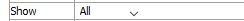

接触面绘图项
说明
接触面的位置、数值或标签信息。
属性
类型

设置要显示哪些接触面。
类型：从以下选项中选择：“位置”用于显示接触面的位置；“等值线”用于显示接触面单元上数值的等值线，或“滑动”用于显示接触面单元上发生滑动的位置。
后续属性将随此处所做的选择而相应变化。它可用于选择要显示哪一种可用的等值线或滑动状态。
| 位置 | 等值线依据ᴬ | 滑动依据ᴮ |
|---|---|---|
| 位置ᴸ | 节点附加ᵉ | 法向 |
| 法向位移 | 剪切 | |
| 法向应力 | ||
| 贯入 | ||
| 特性ᵖ | ||
| 剪切位移 | ||
| 剪切应力 |
| 图例说明： |
| ᴸ“位置”属性包含“按…着色”、“实心”、“颜色列表”和“线”选项 |
| ᵉ其后跟随一个“索引”属性 |
| ᵖ其后跟随一个“特性”属性 |
| ᴬ所有“等值线依据”选项都提供“多边形”和“切割线”属性 |
| ᴮ所有“滑动依据”选项都提供“多边形”、“切割线”、“颜色列表”和“线”属性 |
隐藏空单元

不在绘图中显示空项。详情请参见标准的 隐藏空单元（hide-null） 控件说明。
映射

将该项映射到新的模型坐标。详情请参见标准的 映射（map） 控件说明。
变形系数

设置变形系数。详情请参见标准的 变形系数（def-fac） 控件说明。
多边形

设置项目面片的属性。详情请参见标准的 多边形（polygons） 控件说明。
透明度

设置绘图项的透明度。详情请参见标准的 透明度（transparency） 控件说明。
图例

设置绘图图例中该项目的标签。详情请参见标准的 图例（legend） 控件说明。
在 标题 下方，接触面绘图项还在 图例 中为 数量、颜色列表、映射 和 变形系数 提供控件。
| 这些内容对您有帮助吗？… | FLAC3D © 2019, Itasca | 原文更新于 2020 年 10 月 8 日 |